Ichinohe
Ichinohe · Iwate
Ichinohe
Highlighted on the Iwate map.
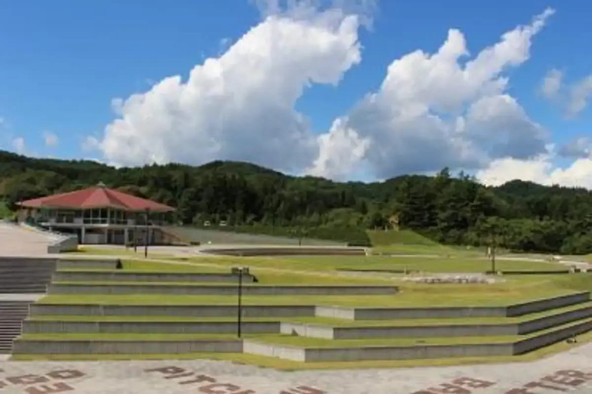
Stay
ホテル奥中山高原
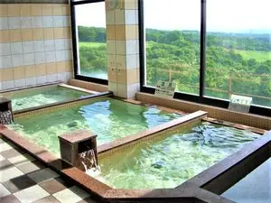
Hoteru Okunaka Yamataka Hara
Hotel in Ichinohe, Iwate.
Dining
雅
Masa
Shokudo diner in Ichinohe, Iwate.
雪あかり
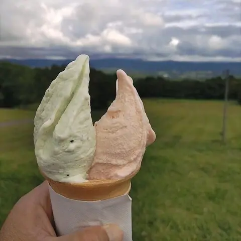
Yuki Akari
Gelato and ice-cream shop in Ichinohe, Iwate.
クレムリ
Kuremuri
Soft-serve stand in Ichinohe, Iwate.
食事処 田中
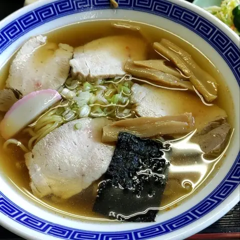
Shokuji Tokoro Tanaka
Shokudo diner in Ichinohe, Iwate.
えいらく
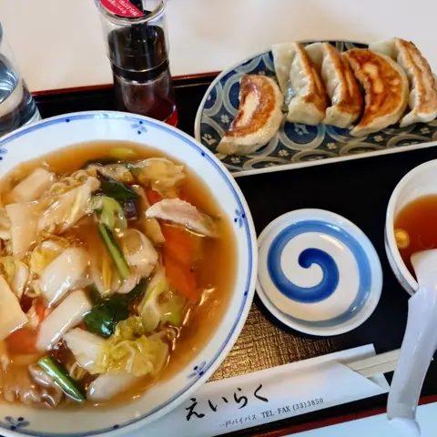
Eiraku
Chinese restaurant in Ichinohe, Iwate.
結カフェ
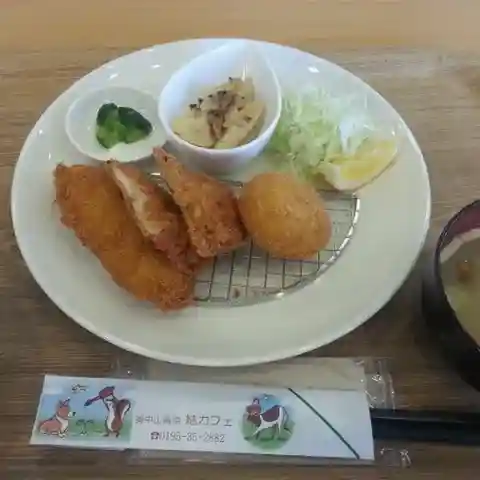
Ketsu Kafe
Shokudo diner in Ichinohe, Iwate.
旭食堂
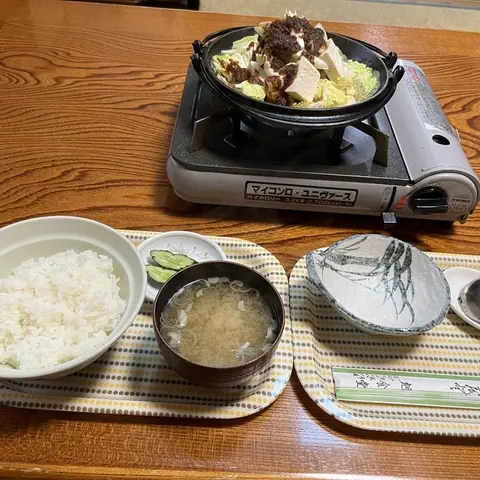
Asahi Shokudou
Rice-bowl restaurant in Ichinohe, Iwate.
カフェ 里やま
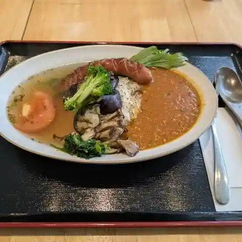
Kafe Sato Yama
Café in Ichinohe, Iwate.
そば処 こずや
Soba Tokoro Kozuya
Soba restaurant in Ichinohe, Iwate.
常前食堂
Tsune Zenshoku Dou
Shokudo diner in Ichinohe, Iwate.
Coffee & Restaurant Cherry
Coffee & Restaurant Cherry
Coffee shop in Ichinohe, Iwate.
サラダボウルこずや
Saradabouru Kozuya
Western sweets shop in Ichinohe, Iwate.
レストラン カシオペア
Resutoran Kashiopea
Shokudo diner in Ichinohe, Iwate.
ラーメン麺太
Raamen Men Ta
Ramen shop in Ichinohe, Iwate.
風 tuuli
Kaze Tuuli
Shokudo diner in Ichinohe, Iwate.
うらら亭
Urara Tei
Yoshoku (Western-style) restaurant in Ichinohe, Iwate.
カフェ いちのへ日和
Kafe Ichinohe Hiyori
Café in Ichinohe, Iwate.
立花食堂
Tachibana Shokudou
Shokudo diner in Ichinohe, Iwate.
北館菓子舗
Kitakan Kashi Ho
Japanese sweets shop in Ichinohe, Iwate.
里やま市場
Sato Yama Shijou
Takoyaki stand in Ichinohe, Iwate.
風の谷
Kazenotani
Local-cuisine restaurant in Ichinohe, Iwate.
Sights
Old House Restaurant Urara-tei
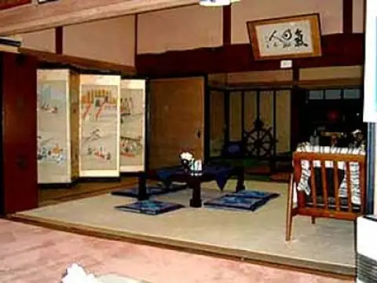
This restaurant was opened in an old house that was built in the early Meiji period and is over 100 years old, and is located on a small hill near Goshono Jomon Park.
Soba Restaurant Kozuya
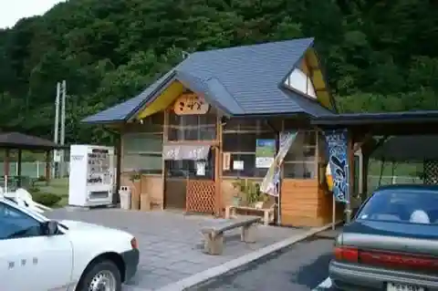
"Soba Restaurant Kozuya" is adjacent to Salad Bowl Kozuya. These are handmade soba noodles made by farm mothers using the local method from the soba grown in their own fields.
Okunakayama Highland Gelato Yukiakari
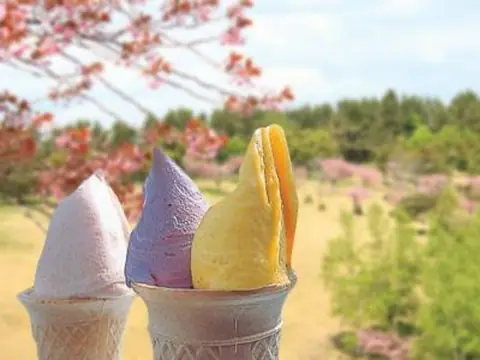
Gelato carefully made with fresh milk from Okunakayama Highlands.
Okunakayama Kogen Onsen Kosei no Yu
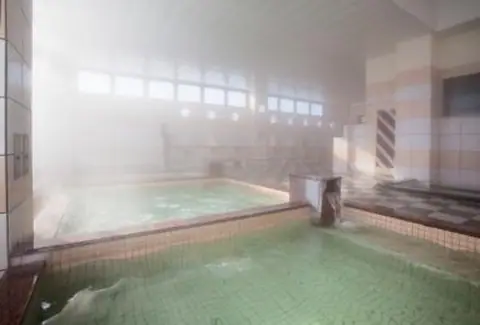
Okunakayama Kogen Onsen Kousei no Yu [Oku Nakayama Kogen Onsen]
Bandaikan
It was founded in 1909 as a puppet theater in a converted storehouse, and began screening movies in the Taisho era.
Ichinohe Town Tourism Observatory
There is a reflecting telescope with a diameter of 50 centimeters, and you can use a computer to search for the stars you want to see.
Takamori Plateau
Altitude: 668m. It is covered with approximately 500 hectares of vast pastureland, and the contrast between the sparkling sun, the bright green grass, and the blue sky is impressive.
Momiji Koyusha
"Momiji Koyusha" was built to make use of the traditions that have been passed down in the area since ancient times, to promote interaction between generations, and to provide a place for visitors to experience bamboo crafts in a casual manner.
Goshono Ruins [World Heritage Site]
On July 27, 2021, "Jomon Sites in Hokkaido and the Northern Tohoku Region," including the Goshono Ruins, were decided to be inscribed on the World Heritage List at the 44th session of the World Heritage Committee (held online).
Canaan Ranch
A handmade bread factory located on a refreshing plateau. They also sell their products at a factory that makes handmade breads using Nishidake's spring water, 100% ground flour, millet grains, and handmade jams.
Ichinohe Handicraft Museum
On display are wooden and bamboo accessories, furniture, and sakiori made by craftsmen in Ichinohe Town.
Nishidake Fish Farm Fishing Pond
A fishing pond where you can enjoy fishing for char and rainbow trout in the great outdoors.
Torigoe Kannon
This is an old temple that is said to have been founded by Jikaku Daishi in the early Heian period (early 9th century).
Fujishima Wisteria
A huge Nodafuji tree with beautiful branches is located in Kotoridani in the town.